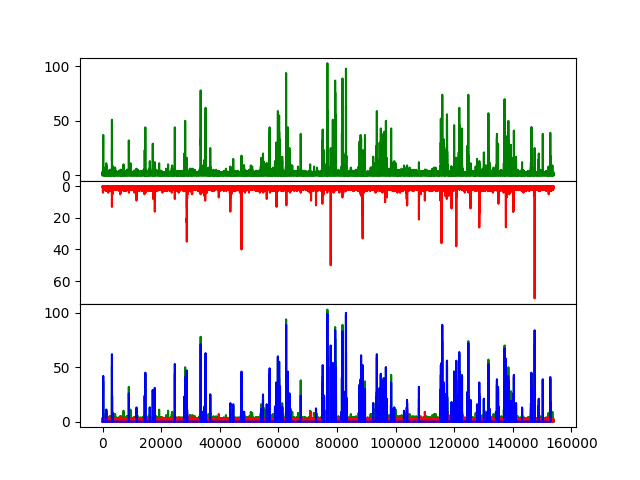

Note
Click here to download the full example code
Burst selection routines¶
The function tttrlib.ranges_by_time_window can be used to define ranges in
a photon stream based on time windows and a minimum number of photons within
the time windows. The function has two main parameters that determine the
selection of the ranges besides the stream of time events provided by the
parameter time:
The minimum time window size
tw_minThe minimum number of photons per time window
n_ph_min
Additional parameters to discriminate bursts are:
The maximum allowed time window
tw_maxThe maximum number of photons per time windows
n_ph_max
The the parameters of the C function and the function header are shown below .. note:
void ranges_by_time_window(
int **ranges, int *n_range,
unsigned long long *time, int n_time,
int tw_min, int tw_max,
int n_ph_min, int n_ph_max
)
For a given TTTR object the functionality is provided by the TTTR object’s
method get_ranges_by_time_window. A typical use case of this function is
to select single molecule events confocal single-molecule FRET experiments as
shown below.
#.. plot:: ../examples/single_molecule/single_molecule_burst_selection.py
Above, for a donor and acceptor detection channel a histogram trace for is shown in green and red. In blue the range based selection is shown.

import numpy as np
import tttrlib
import pylab as p
data = tttrlib.TTTR('../../test/data/bh/bh_spc132.spc', 'SPC-130')
mt = data.get_macro_time()
time_in_ms = 1.0
tw_ranges = data.get_time_window_ranges(
minimum_window_length=time_in_ms,
minimum_number_of_photons_in_time_window=20
)
start_stop = tw_ranges.reshape([len(tw_ranges) // 2, 2])
sel = list()
for start, stop in start_stop:
sel += range(start, stop)
sel = np.array(sel)
green_indeces = data.get_selection_by_channel([0, 8])
red_indeces = data.get_selection_by_channel([1, 9])
fig, ax = p.subplots(3, sharex=True, sharey=False)
p.setp(ax[0].get_xticklabels(), visible=False)
ax[0].plot(tttrlib.compute_intensity_trace(mt[green_indeces], 30000), 'g')
ax[1].plot(tttrlib.compute_intensity_trace(mt[red_indeces], 30000), 'r')
ax[1].invert_yaxis()
ax[2].plot(tttrlib.compute_intensity_trace(mt[green_indeces], 30000), 'g')
ax[2].plot(tttrlib.compute_intensity_trace(mt[red_indeces], 30000), 'r')
ax[2].plot(tttrlib.compute_intensity_trace(mt[sel], 30000), 'b')
p.subplots_adjust(
left=None, bottom=None, right=None, top=None,
wspace=None, hspace=0
)
p.show()
Total running time of the script: ( 0 minutes 0.281 seconds)